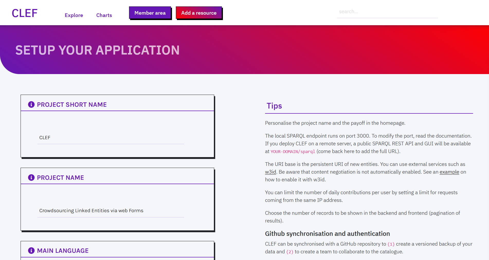
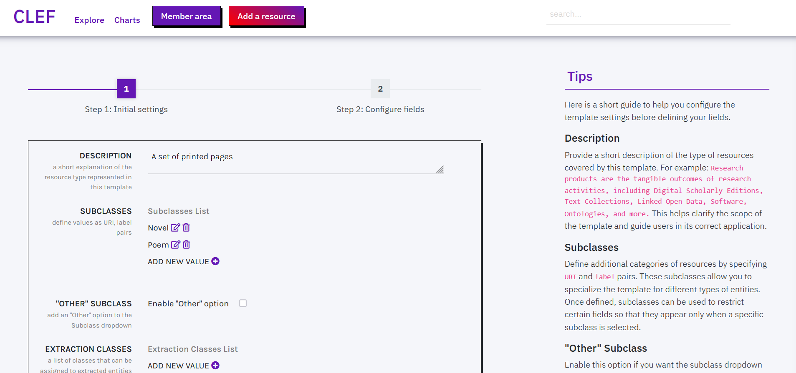
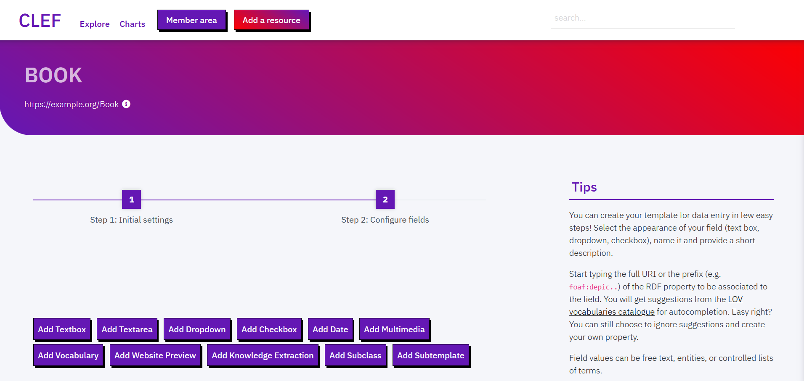
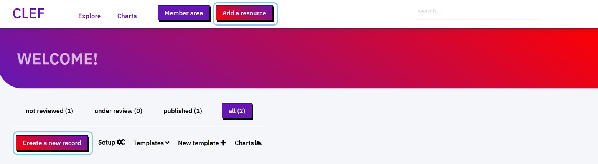
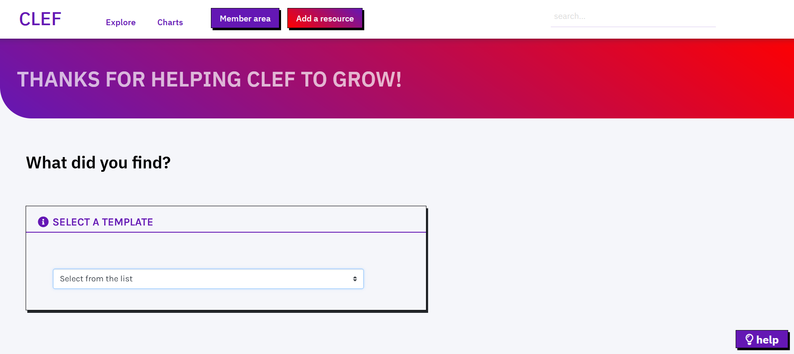
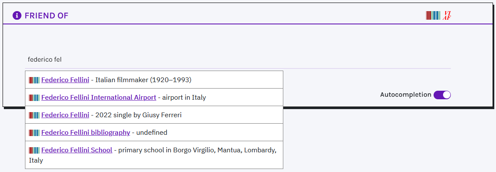
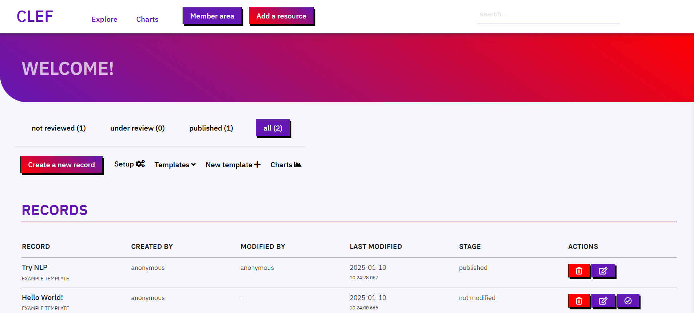
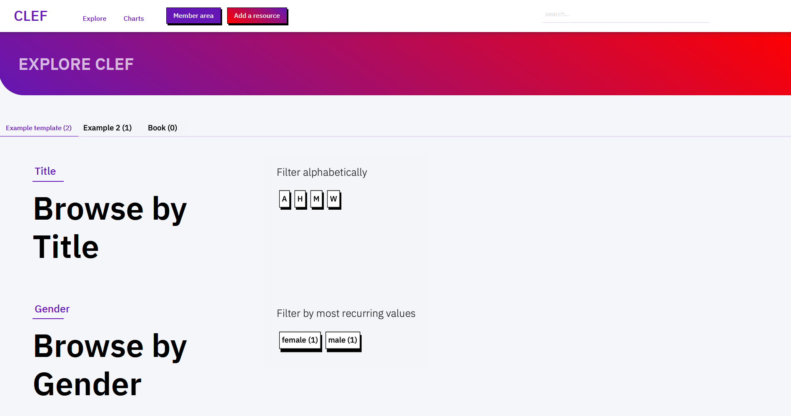

CLEF. Crowdsourcing Linked Entities via web Form
Introduction
CLEF is a lightweight Linked Open Data (LOD) native cataloguing system tailored to small-medium collaborative projects. It offers a web-ready solution for setting up data collection or crowdsourcing campaigns.
CLEF is designed to facilitate admin tasks, and to allow collaborators to produce high quality linked open data via user interface, without the burden of understanding what all this fuzz around LOD is about!
Some highlights
- customisable: create your templates for data collection
- collaborative: allow everybody to contribute to your catalogue and grant permissions to smaller groups of collaborators
- peer-review: allow collaborators to review records before publication
- autocompletion: ensure collaborators reference the same contents. Autocomplete suggestions from Wikidata, geonames and your own catalogue make it easier!
- knowledge extraction: enrich your catalogue by extracting key entities from SPARQL endpoints, APIs, static files, and websites
- synchronization with github: use github to authenticate collaborators, to backup and version your data
- web archiving: save your web sources for future use in Internet archive
- release 5-star data store, serve, and query your data as Linked Open Data
- browse data immediately CLEF comes with an online browsable catalogue. You can create indexes with one click (no need to develop another application for showcasing your data!)
- work locally or remote use CLEF from your desktop or on a remote server
Install and run
With Docker
- install Docker on your system
- Windows update to the newest version of Windows to ensure that Docker can be installed. For example, if you have a Windows Home, ensure you have at least the version 2004
- macOS
- Linux
- clone or download the repository
- with git for easier installation and update (optional, recommended)
git clone https://github.com/polifonia-project/clef.git - or download the zip repository and unpack it.
- no extra action is needed for configuration. The configuration is loaded from
conf.py. The only difference regards the set up of the endpoints for Blazegraph, SPARQL.Anything and the application (in three containers). This is set indocker-compose.ymlby three properties: BLAZEGRAPH_ENDPOINT=http://db:8080/bigdata/sparqlSPARQL_ANYTHING_ENDPOINT=http://sparqlanything:3000/sparql.anythingPUBLIC_BLAZEGRAPH_ENDPOINT=http://localhost:8080/sparql- ensure that your Docker engine is running
- run
docker compose up(the first build might take couple of minutes) - Production:
docker compose --project-name=clef -f docker-compose.prod-opt.yml up -d -densures that it runs as a daemon on the background-fspecifies different file to build for productionproject-nameensures that the containers are not prefixed withapp-- access your web browser at http://localhost:8080
- follow the instructions for customization
Setup
Setting up the application involves three main steps:
- Default setup: you can modify core parameters on the Setup page, including project name, language, endpoints, URI base, limits, pagination, and catalogue colors;
- Github synchronisation: you can connect your application to GitHub for authentication, data backup, and versioning;
- Templates and ontologies: before starting to populate your catalogue, you must create and configure templates, each representing an entity category with a user-friendly web form.
Default setup
You can modify the default configuration of the application from the Member area > Setup. Changes to the configuration have immediate effect (no need to restart the application), except for interface colors.
Recommended Parameters
These are core parameters you should configure for proper application usage:
PROJECT (SHORT) NAME: Personalise the project name and the payoff, which appear in the homepage and the menu across pages.
MY ENDPOINT: The local SPARQL endpoint runs on port 3000. Changes are disabled. To modify the default port you'll have to modify the following files:
- change
myEndpointinconf.py, in the root folder of the application docker-compose.yml
MY PUBLIC ENDPOINT: The public URL of your SPARQL endpoint, used for front-end functionalities, e.g. autocomplete. Default URI is http://127.0.0.1:3000/blazegraph/sparql. Similarly to the local endpoint address, to change the port of the web application, change the aforementioned files.
SPARQL.ANYTHING ENDPOINT: Configure the local SPARQL.ANYTHING endpoint, which by default runs on port 3000. To change the default port, update docker-compose.yml.
URI BASE: The URI base is the persistent URI of new entities. You can use external services such as w3id. Be aware that content negotiation is not automatically enabled. See an example on how to enable it with w3id.
Optional Parameters
These parameters can be adjusted for personalization or advanced configuration:
MAIN LANGUAGE: The default language used to display cataloged data.
LIMIT REQUESTS: Limit the number of daily anonymous contributions per user - requests coming from the same IP address.
PAGINATION LIMIT: Choose the number of records to be shown in the backend and frontend (pagination of results).
PRIMARY COLOR: Select the primary color of your catalogue (used for titles). Changing this setting requires restarting the application.
SECONDARY COLOR: Select the secondary color of your catalogue (used for highlights and gradients). Changing this setting requires restarting the application.
GitHub synchronisation
GitHub synchronisation is a necessary step unless you are working in a local environment. It is used for authentication, data backup, and versioning. While local usage does not require GitHub integration, it is essential in production to control who can create and modify content, and to ensure data is saved reliably.
GitHub backup
CLEF can be synchronised with a GitHub repository to (1) create a versioned backup of data (and keep track of changes to records) and (2) to create a team to collaborate to the catalogue.
Before modifying the Setup page, you will need:
- to create a github account (if you do not have it yet)
- to create a github repository for storing the backup version of your data. Here you must create a folder called
records. - to obtain a github bearer token, to allow CLEF to read/write on your repository on your behalf
When selecting the scopes of the permissions for the bearer token, ensure repo rights are selected.
In the setup page you can then enable Github synchronization by modifying the following fields:
- Enable Github backup:
True - COMMITS DEFAULT AUTHOR: your GitHub username
- COMMITS DEFAULT AUTHOR EMAIL: the email you used to register on Github
Remember the repository must be either yours or of an organisation where you have been accredited as a collaborator with admin privileges.
- REPOSITORY OWNER: If the repository is yours, use your username, otherwise use the organisation name
- REPOSITORY NAME: the name of the repository as recorded in the URL (after the owner name)
- GITHUB BEARER TOKEN: Copy and paste the bearer token. Be aware you may need to change this code over time - according to the expiry date you choose.
GitHub authentication
To allow only a restricted number of collaborators to access the backend of your application, you can use Github for authentication. Every collaborator must have:
- a github account
- been invited (via GitHub) to collaborate to the repository
In addition to prior requirements for synchronization, the owner of the repositoy must also create a github OAuth application connected to the repository and the web application
- Follow the instructions for creating the OAuth app
- when asked, select as Authorization callback URL the following path
{YOURDOMAIN}/oauth-callback, e.g. http://mydomain.org/oauth-callback - At the end, copy and paste the CLIENT ID and SECRET KEY in the Setup page
GitHub authentication is strongly recommended for applications that run online.
If you do not enable it, any visitor will be able to access the backend of your application.
Once it is enabled, only accredited GitHub users that are collaborators of your repository will be allowed to access the Member area from the menu.
Notice that anonymous contributions will still be possible (from the menu Add a resource). Only accredited users will be able to review and publish the new record though.
Templates and ontologies
Templates are interfaces designed to setup the web forms for data collection. Each template corresponds to a topic of interest to be described (an entity). Templates can be created, modified, and deleted from the Member area.
Create a template
To create a new template, click on Create a new template in the Member area.
First, you must provide a meaningful unique name (e.g. Book, Person) and the URI of one or multiple OWL classes (e.g. http://xmlns.com/foaf/spec/#term_Person). Notice that name and class cannot be modified
in later stages (you can only delete and start a new template).
Once filled in name and class, you are redirected to a dedicated webpage for customizing the template's settings.
What you can modify:
DESCRIPTION: Write a short description of the type of resources that this template is meant to describe. This information helps clarify the purpose of the template and guide users in applying it correctly.
SUBCLASSES: Define more specific categories within the main type of resource described by the template. They can also be used to display certain fields only when a specific subclass is selected.
"OTHER" SUBCLASS: Activate this option to include an Other value in the subclass dropdown. This allows users to describe resources that do not fit any of the predefined subclasses, ensuring flexibility when classifying data.
EXTRACTION CLASSES: Define which classes can be automatically assigned to entities identified through Named Entity Recognition in textual descriptions and through semi-automatic Knowledge Extraction from available resources.
HIDE TEMPLATE: Enable this option if you want to keep the template available only to administrators. Hidden templates remain accessible for editing and maintenance but cannot be selected by regular users when creating new records or browsing existing ones.
Configure a template
Templates are lists of fields, each corresponding to a RDF property having as a subject an instance of the class already specified.
You can create new fields choosing between: textbox (short texts), text area (long texts), dropdown (select 1 term from list), checkbox-(multiple terms from list), date (date values), multimedia (embed multimedia files), vocabulary (controlled terms from taxonomies and SKOS thesauri), website preview (embed iframes), knowledge extraction (retrieve key entities from multiple sources), subclass (ontological subclasses via checkboxes), and subtemplate (a subform with additional fields from another Template).
For each new field you are asked to fill in a few details, like: display name (to be shown in the final web form for data entry), a description (that will appear next to the field), the RDF property associated to the field, values type or list (see below), and placeholder (an example value of the field).
Tip! You can type the complete URI of the RDF property or, if known, start with the prefix and property name. Autocompletion suggestions will appear (powered by LOV). To accept a suggestion, click on the short name in violet. If you ignore suggestions, type the full URI of your property.
You can modify the order of fields or delete fields using the icons that appear at the bottom of each field box.
TEXT BOX
Text boxes can be used to record 4 types of information. In the VALUE TYPE field you can choose between:
- Free text (Literal): short texts (e.g. a title). When this value is selected, a checkbox appears on the bottom of the box, asking whether to use this value as primary label. At least one free text field must be included in the template and at most one free text field must be flagged as primary label to associate a title to the record.
- Entity URI (from Wikidata, VIAF, or catalogue): the final field provides autocompletion suggestions from wikidata or, if nothing is found on Wikidata, from the catalogue. Users may accept or reject the suggestions. (NB. this field is not meant to record URLs of web resources. Use URL instead.). When this value is selected, a checkbox appears on the bottom of the box, asking whether to use this field value as a filter in the Explore page, i.e. it creates an index of catalogued resources by values of the selected field. You can create as many filters as you want.
- Location (from geonames): the final field provides autocompletion suggestions from geonames, a specialised service for administrative and geographical locations. Like with Entity URI, when this value is selected, a checkbox appears on the bottom of the box, and this field can be used as filter in the Explore page.
- Researcher Idenier (from ORCID): the final field provides autocompletion from ORCID, the international registry of researchers. This option enables users to link a resource or record directly to an individual’s verified ORCID identifier. As with the other entity-based types, a checkbox appears at the bottom of the box allowing this field to be used as a filter in the Explore page.
- URL: to record URLs of web resources (e.g. an online video or a blog post). In the final form you will be asked if a copy of the website should be preserved in the long term. While you cannot store external documents in CLEF, CLEF sends a request to the Internet archive Wayback machine to store a copy of your favourite webpages.
TEXT AREA
A text area can include a long textual description.
In this field you can automatically extract Named Entities (powered by SpaCy). After filling in the field, press return and wait for suggestions to appear at the bottom of the text area. Suggested entities (people, places, organisations, etc.) are matched to Wikidata entities and are stored as keywords associated to the record (schema:keywords) - not as values of the field. You can accept or reject suggestions. For each extracted entity, you can also assign a class from the list of Extraction classes defined in the template settings (see Create a template).
DROPDOWN AND CHECKBOX
Dropdown and checkboxes behave similarly. These allow the final user to choose one or more terms from a list of controlled values. Specifically, dropdowns restrict the selection to one term from the list, while checkboxes allow multiple choice selections.
In the field VALUES you can define an arbitrary number of terms to populate the final dropdown menu or checkbox list. Each term consists of a label and a corresponding URI, which can be added one by one. Both internal and external vocabularies can be used (and mixed).
DATE
Date fields allow the final user to insert a date in a predefined format.
Specifically, the format must be chosen among the available options in the field CALENDAR, which include: YYYY/MM/DD (Full Date: xsd:gDate), YYYY/MM (Month and Year: xsd:gYearMonth), YYYY (Year: xsd:gYear). The first two formats will be displayed as a calendar input, while the last one will function as a textbox, generating a dropdown of suggestions based on user input.
MULTIMEDIA AND WEBSITE PREVIEW
The Multimedia and Website preview fields operate similarly, enabling end users to insert links to external resources: Image, Audio and Video for the former, Webpages for the latter. A preview of the chosen resources will be displayed in the final record.
Multimedia fields have an extra parameter, MULTIMEDIA TYPE, which permits the selection of the desired type of multimedia resource, namely: Image (".jpg", ".jpeg", ".png", ".gif", ".ico", ".svg", etc.), Audio (".mp3", ".wav", ".ogg"), Video (".mp4", ".ogg", ".webm"), or All (including all the formats mentioned before).
VOCABULARY
A Vocabulary field behaves similarly to Entity URI (Text Box), i.e. suggestions are provided while typing. In this case, suggestions are terms gathered from available SKOS vocabularies.
A collection of predefined SKOS vocabularies is already available (VOCABULARIES LIST), which include TaDiRAH, Data theme, File type, Access right, Language, Licenses, Frequency. Still, you can add a new vocabulary by clicking on the ADD A NEW VOCABULARY button. To add a new vocabulary you must provide a label, a link to the vocabulary webpage, a SPARQL endpoint, and a SPARQL query to retrieve terms. The query must return two default variables, i.e. ?uri and ?label, which respectively return the URI and a string label for the term. Once added, the new vocabulary will be saved and made available for later reuse. Additionally, it is possible to specify whether the final user can select more than one term for that particular field (NUMBER OF TERMS).
KNOWLEDGE EXTRACTION
A Knowledge Extraction field enables automatically extracting key Named Entities (URI-label pairs). To perform this task, users must provide one or more queries to be sent to specific APIs and SPARQL endpoints or to parse Static Files (.csv, .json, and .xml formats are allowed) and Websites.
Although extracted value pairs can be manually modified, some services do not provide URIs for retrieved entities. To address this, you can use an Entity Reconciliation service to automatically obtain URIs from authority records based on the retrieved labels.
SUBTEMPLATE
Subtemplate fields enable the creation of multiple interconnected Records through a single Web Form. Instead of a standard input field, imported Subtemplates are displayed as nested sub-forms within the main one, removing the need for users to create separate resources and link them manually.
Subtemplate fields can import any Template, including the same Template for which the field is set. New options can be created during configuration, and multiple Templates can be imported at once, giving users flexibility in choosing the best fit. The Cardinality option allows limiting the creation of sub-records to a single instance. Meanwhile, the Data Inheritance option ensures that when the parent Template and the Subtemplate have input fields with the same RDF Property, the Subtemplate field automatically adopts the value chosen for the parent field.
SUBCLASS
A Subclass field behaves similarly to dropdwon, presenting end-users with a list of values corresponding to ontological classes. Users can select the term that best align with the entity being described. Depending on the chosen value, additional input fields are dynamically displayed, enabling more precise and tailored solutions for Records description and exploration.
The list of SUBCLASSES is automatically retrieved from the initial configuration. To modify or update these values, go to the Settings page.
Data model
In CLEF it is not possible to import ontologies and vocabularies. Instead, the data model is created from the classes and properties specified in templates. The final data model is documented in a dedicated web page called Data Model, available from the footer of every web page. For each template, class, and property, the LOV catalogue is queried to retrieve original labels associated with the URI. If the class or property is not indexed in LOV, the local label (the display name) is shown instead.
Getting started!
Overview
CLEF comes with the following webpages, accessible from the menu:
- Homepage a landing page presenting the project. Title and payoff can be changed from the Setup page. Instead, the page content can be only changed manually by modifying the HTML file
templates/login.html - Explore an automatically generated index of resources. For each template a tab is created for exploring resources of the specified class. Properties selected as filters in their respective templates are here used to create sections for exploration. For each template an alphabetical index is displayed. Other filters (i.e. those having Entity URI, locations, or controlled lists, as values) are shown sorted by distribution (i.e. most recurring values are shown first).
- Charts a page entirely dedicated to catalogue exploration through data visualization solutions powered by amCharts. It offers visual representations of catalogue data, helping users identify patterns, trends, and distributions across resources. Project maintainers can customize this page by combining Maps, Charts, Counters, and textual descriptions to tailor the visualization experience to their needs.
- Member area the backend of the application. Can be accessed via github authentication or, if not applicable, in anonymous mode. The welcome page shows the list of created records, and the actions possible on those (modify / publish / delete). From here, users can modify the Setup of the application and the form template.
- Add a resource create a new record in anonymous mode. To create a record with user credentials, access the member area via github authentication first.
From the footer:
- SPARQL endpoint a GUI for querying against your data in SPARQL. The same URL
{YOURDOMAIN}/sparqlcorresponds to the SPARQL endpoint REST API. - Data model the specifications of the ontology terms used in templates
- Editorial guidelines a list of tips for creating new records. The page is also available as right sidebar when creating a new record.
Moreover, each record has a dedicated webpage, permanently identified by its URI. Likewise, terms from internal controlled vocabularies and new entities referenced in records (e.g. new entities created in Free text fields) have a dedicated webpage. External terms do not have dedicated page. Rather, a link to the source is provided (e.g. Wikidata items)
Create a record
Users can create a new record in two modalities: anonymous or authenticated mode.
- Anonymous users can create new reocrds via the button
Add a resourcein the menu. In this way the user is not authenticated, and their personal information is not stored. The IP address of the user is tracked and a limited number of new records can be created per day. Records created in this way can be accessed from the member area by accredited users, who can modify and publish the record. - Authenticated users should first access the `Member area` from the menu to authenticate via Github. The user is redirected to Github authentication mask, where they are asked to give CLEF permissions to read/write repositories on their behalf. From the Member area, they can use the button
Create a new record. NB. Only users that are collaborators of the organisation and/or repository associated to the project can use this method (see Setup).
The first step to create a new record is to select the template for the resource to be created.
After selecting the template the user is redirected to the data entry interface. The page shows the fields specified in the associated template. On the bottom-right, a light bulb icon shows a shortcut to the editorial guidelines, including tips for data entry. Click on the icon to toggle the helper.
Each field includes three elements: label, description (i icon), and input area. A tooltip shows a description of the expected value when hovering with the mouse. Likewise, a placeholder in the input area can show an example value. The input area can be a free-text field, a dropdown, or a checkbox.
TEXT FIELD
If the label is followed by *, the field is mandatory and it is used to associate a title to the record. While typing, a lookup service searches the catalogue to show whether records with a similar title already exist and prevents from data duplication. However, the lookup does not enforce any behaviour (duplicates could be created).
The default language for text values can be configured by project members on the Setup page. Users can still manually select a different language or add additional ones to input multiple strings in the same field (translate icon).
If followed by the icon of one of the services (e.g., Wikidata, VIAF, or GeoNames), an autocomplete service is called while typing. The user is encouraged to reuse terms from these services. If no matches with the input text are found in them, terms from the catalogue are also suggested, to encourage reuse and consistency of data.
To accept a suggestion, click on the link in the result (e.g. Federico Fellini). The selected value appears under the input area (highlighted in violet). Users can reject all suggestions and create a new value: press enter and the new value will appear under the input area (highlighted in orange). Multiple values are allowed in this type of field.
Text areas allow longer descriptions to be included and can be expanded vertically.
Once users finish typing, they can press return and wait for named entities to be extracted from the text (e.g. people, places, organizations).
Extracted entities are automatically reconciled with Wikidata and stored as keywords associated with the record (not with the specific field).
Users can refine the reconciliation by selecting a more accurate match among the suggested Wikidata options.
In addition, each extracted entity can be assigned to a specific class chosen from the available list of Extraction classes.
Suggestions can be rejected by clicking on the x.
Knowledge extraction
CLEF comes with a suite of tools that enable users of all levels to harness the potential of Linked Open Data and related technologies. In particular, the Knowledge Extraction field aims to provide powerful solutions for easily retrieving valuable information and fully leveraging online datasets and documents while describing Records.
Currently available options include API services, SPARQL endpoints, static files (.json, .csv, and .xml formats are supported), and websites. This feature is powered by SPARQL Anything, a re-engineering tool that allows users to query a wide range of resources, including static files and web pages, using SPARQL. A dropdown allows you to select the option you prefer to run your query.
API SERVICES:
Required parameters to send a query to an API service include:
- API access point (mandatory): the URL of the required service.
- Query parameters (optional): a set of key,value pairs providing query parameters. You can optionally omit this information in case query parameters are encoded within the query URL.
- Result dictionary (mandatory): to properly handle retrieved results, you must provide the keys pointing to the desired values (a
uriand itslabel) within the query output. Results are usually returned in the form of an array of objects. Consequently, three paths are needed to reach the array of results and to access URIs and labels. In case multiple keys should be accessed to retrieve a value, they must be separated by a dot. - Filter results (optional): allows you to refine the retrieved data by applying one or more filters to specific variables returned by the query. Each filter must specify: the filter type (
Regex,Greater than,Less than), the target variable (the field to which the filter applies), and the filter value (the threshold or regex pattern). For example:("Greater than", "Mentions counter", "10")retrieves only items where the "Mentions counter" value exceeds 10.
Based on the given example, query parameters can be omitted and specified directly in the API access point URL:https://vocabs.acdh.oeaw.ac.at/rest/v1/search?=&vocab=tadirah&lang=en&query=lem*.
In this format:
- Use
&to separate parameters. - Use
=to assign values to parameters.
SPARQL ENDPOINTS:
Required parameters to send a query to a SPARQL endpoint include:
- SPARQL endpoint (mandatory): the URL of the required service.
- Query (mandatory): a SPARQL query to retrieve
?uriand?label. Make sure to use theDISTINCTkeyword to eliminate duplicates.
You must include required prefixes at the beginning of the query. Example: PREFIX skos: <http://www.w3.org/2004/02/skos/core#>
STATIC FILES:
Knowledge Extraction from Static files is powered by SPARQL Anything, which allows producing RDF from diverse data sources. In so doing, the advantages of a query language (e.g.: Filtering of huge volume data and Scalability) are transferred on the analysis of ordinary documents (.json, .csv, and .xml formats).
Static files can be either queried via a SPARQL query (check the latest documentation for building your queries) or manually specifying required parameters and filters.
SPARQL queries on static files require the following parameters:
- File URL (mandatory): the URL of the required file.
- Query (mandatory): a SPARQL query to retrieve
?uriand?label. Make sure to use theDISTINCTkeyword to eliminate duplicates.
You can optionally specify your file's URL by embedding the content of the WHERE clause within a SERVICE clause:WHERE { SERVICE <x-sparql-anything:url> { } }
Manual queries on static files require the following parameters:
- File URL (mandatory): the URL of the required file.
- Keys (mandatory): the file's variables to be retrieved (e.g.: json keys, csv labels, xml tags).
- Filters (optional): additional parameters (e.g.: minimum number of occurences, regex) to filter your results.
Keys and filters can only be specified after your file has been successfully parsed. During the parsing phase, the file is scanned to identify all available keys. This allows you to define your keys based on an automatic suggestion system.
WEBSITES:
Required parameters for extracting information from websites include:
- Website URL (mandatory): the URL of the target website to be processed.
- HTML Selector (mandatory): a valid selector used to isolate meaningful HTML elements within the loaded DOM structure.
- HTML Attribute (optional): by default, the inner text of the selected HTML element is retrieved and used as the label for Entity Reconciliation to obtain a URI. Alternatively, you can specify the name of an attribute (e.g.,
href,src,title) to extract its corresponding values. - Regex (optional): a regular expression used to transform or clean the extracted text. You must provide two patterns — one for search and one for replacement — separated by a comma (e.g.,
"pattern_to_find","replacement_pattern"). The modified label will then be available for entity reconciliation.
Manage records
Records are accessible via the member area to authenticated users. Records are paginated and sorted by date (from the most recent to the oldest).
The list of records can be filtered by publication status:
not reviewedcorrespond to records created and never opened/modified. In the table of records, these records are flagged with STAGE: not modifiedunder reviewcorrespond to records created and modified at least once. In the table of records, these records are flagged with STAGE: modifiedpublishedcorrespond to records created, modified at least once and published, i.e. visible from the web page Explore and flagged with STAGE: published.
In the column ACTIONS, the button modify allows a reviewer to modify a record. When clicking, the template is shown filled in with data, and values can be modified. After saving changes, the reviewer's name (if Gitub authentication is enabled) appears in the backend in the column modified by, and the status of the record changes to modified. Once it is reviewed at least once, the record appears in the Explore page.
NB. Before being reviewed, records do not appear in the Explore page. Records must be reviewed at least once before being published. Once a record has been published it cannot be temporarily removed from the Explore page (e.g. modifying a published record). Rather, the record keeps appearing in the Explore page, and the title is flagged with the label draft.
The button review allows a reviewer to modify a record and, if the review process is deemed over, to publish it straightaway. When modifying the record, the reviewer may decide to save the changes without publishing the record. After publication, the status changes to published and the label draft is removed from the title of published records.
To remove the record from the Explore page, it must be deleted. The button delete in the column ACTIONS allows a reviewer to delete a record permanently. If Github synchronisation is enabled, the action affects also the file stored in the repository.
Visualize records
New records are available at {YOURDOMAIN}/view-{RESOURCEID}. The web page shows fields in the same order as in the template.
When clicking on values, the website can redirect users to Wikidata pages (e.g. Department of classical philology), geonames pages (e.g. Bologna) or to internal pages describing terms belonging to controlled vocabularies (e.g. female).
From the same page, it is also possible to download the record in multiple formats, including TTL, RDF/XML, and JSON-LD.
Explore and search
Records can be browsed in the page Explore. Records are grouped by template in tabs, also showing the number of records falling uder that cetegory. In each tab, sections are shown for each field specified as a filter in the template.
By default, an initial filter is created for the text field defined as primary label, and records are sorted alphabetically. Filters based on entities (i.e. text fields referencing entity URIs and locations, or dropdwon and checkboxes referencing controlled vocabularies) are grouped by frequency of values, and then sorted alphabetically.
The top-right search bar in the menu looks into the catalogue for resources titles. The search is performed on the primary label of records. Suggestions are shown while typing.

Data visualization
CLEF offers a comprehensive suite of tools designed to facilitate the exploration of resources within the Catalogue. You can access a variety of customizable data visualization options through the dedicated page in the Member Area. By providing SPARQL queries, you can extract meaningful entities and statistics from your data, enabling a deeper and more insightful exploration of the Catalogue's contents.
Each visualization usually include a Title and a customizable Description, which can be further enriched through HTML tags and related attributes, allowing you to incorporate links, colorful captions, and other interactive elements. Available visualization options include Counters (retrieve counts of key entities within the Knowledge Graph), Charts (graphical representation of your data), and Maps (highlight geographical distributions of recorded entities).
COUNTERS
You can create your own list of COUNTERS, each paired with a Label and a Count value generated by a SPARQL query. New counters can be added through the designed button: to ensure your SPARQL query works properly, make sure it returns a single numeric value assigned to the variable ?count.
CHARTS
CLEF offers four Charts solutions powered by the JS library amCharts: Bar Charts, Pie charts, Donut Charts, and Semi-circle Charts. These tools are designed to effectively visualize the relationship between a categorical variable (e.g., the name of an element class) and a numeric variable (e.g., the number of instances within that class). Both these values must be retrieved through a specific SPARQL query.
To ensure your SPARQL query works properly, it should return a literal value assigned to the variable ?label and a numeric value assigned to the variable ?count. For improved readability, you can provide a label for each variable and choose to sort the returned elements either alphabetically or numerically. Moreover, you can optionally decide to enrich your visualization with an automatically generated legend.
NETWORK
CLEF offers an interactive Network Graph solution — powered by the JS library amCharts — for visualizing groups of related entities and their relationships within the Catalogue. This visualization is useful to display how entities cluster by class and label, and to inspect counts of grouped items.
To ensure your SPARQL query works correctly, it must return the variables ?classLabel, ?entity, ?label, and ?count. The visualization groups entities (?entity) that share the same class (?classLabel) and label (?label), while ?count provides the number of occurrences for each group. A typical example is grouping catalogue subjects by their classes. In the MAIN CLASS field, provide the overall label that represents all entities described by the graph (for instance: Subjects).
MAPS
CLEF offers two Maps solutions -powered by the JS library amCharts- for displaying geographical locations (Simple Map) and clusters of elements (Drill-down Map) within an interactive map or globe.
To ensure your SPARQL query works correctly, it must return at least locations, with an optional numeric value assigned to the variable ?count. Locations can be represented either as GeoNames entities (using the variable ?geonames) or as pairs of latitude and longitude values (using the variables ?lat and ?long). In both cases, each location should be associated with a label assigned to the variable ?label.
Data access
THE DATASET
New resources (records) are associated with the class and the URI base specified in the template. Instead, URIs from Wikidata and geonames are directly reused and no information on their classes or properties are stored.
For every new resource a named graph is generated, which includes triples all having the same subject the {resourceURI} identifying the resource. The named graph appears in the form {resourceURI}/ (the same URI of the resource, followed by a slash).
Basic provenance information is associated with named graphs. Whenever applicable the PROV ontology is reused, namely:
RDFS.labelthe label corresponds to the field set as primary label in templatePROV.wasAttributedTothe creator of the resource. Can be anonymous if the user did not log in, or a URI including a normalised string of the github user email{BASE}/{GITHUB_EMAIL}PROV.wasInfluencedBythe modifier of the resource.PROV.generatedAtTimethe datetime of the creation/change of the record. Versioning details are not stored in the graph. To get details on the modified files (e.g. which fields were modified and by whom), users must review github commits.DBPedia.currentStatusthe stage of the record in the editorial process. Values (literals) include:not modifieda record created that has not been reviewedmodifieda record reviewed that has been reviewedpublisheda record reviewed and published.
DATA MODEL
A reference page dedicated to the data model is automatically generated by the system to support developers in data reuse. The webpage is available at {YOURDOMAIN}/model (link in the footer).
The documentation is automatically generated by querying CLEF, to retrieve class and properties effectively used, and Linked Open Vocabularies (LOV), to retrieve labels and comments associated to the original specification in the ontology. If a property is not available from the LOV catalogue, a default label is shown.
USER INTERFACE
New records are available at {YOURDOMAIN}/view-{RESOURCEID}. The webpage also serves data as RDFa (according to schema.org). NB. Dereferentiation is not a built-in feature. Users must refer and configure external persistent URI providers (e.g. w3id).
SPARQL endpoint
CLEF comes with a built-in SPARQL endpoint. A GUI for querying the SPARQL endpoint (read only) and a REST API for programmatic querying the triplestore is available at {YOURDOMAIN}/sparql.
DATA DUMP
When Github backup is enabled, a backup of records is there provided in Turtle (a file for each record). By default, files are included in a folder called records. Versioning is provided by github. Every time a change happens to a record in the application, an update is sent to Github.
Be aware that the synchronization between the triplestore and the repository is one-way, that is, changes happening on github only are not sent to the triplestore.
Deployment
CLEF is based on webpy. To deploy CLEF in production server without Docker, you'll need a professional web server process, such as gunicorn, which will serve the app. See how to deploy web.py applications.
DEPLOY WITH DOCKER
The docker-compose.prod-opt.yml is set up for the server deployment using three docker containers, with nginx handling the static files as described above.
docker compose --project-name=clef -f docker-compose.prod-opt.yml up -d- The app listens on port 80, so if you run this locally, access your browser at
http://localhost
Credits
CLEF has been funded by Polifonia, a H2020 project (101004746), and ATLAS, a Next Generation EU project (PRIN 2022, Mission 4 Component 1 CUP J53D23013000006).
The repository is maintained by marilena.daquino2@unibo.it and sebastiano.giacomin2@unibo.it.